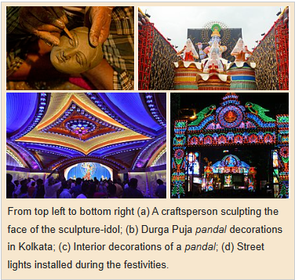
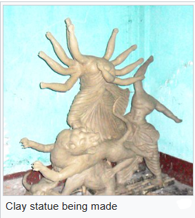

 
The process of the creation of clay sculpture-idols (pratima or murti) for the puja, from the collection of clay to the ornamentation is a ceremonial process. Though the festival is observed post-monsoon harvest, the artisans begin making the sculpture-idols months before, during summer. The process begins with prayers to Ganesha and to the perceived divinity in materials such as bamboo frames in which the sculpture-idols are cast.
Clay, or alluvial soil, collected from different regions form the base. This choice is a tradition wherein Durga, perceived as the creative energy and material, is believed to be present everywhere and in everything in the universe. In certain traditions in Kolkata, a custom is to include soil samples in the clay mixture for Durga from areas believed to be nishiddho pallis (forbidden territories; territories inhabited by the "social outcasts" such as brothels).
The clay base is combined with straw, kneaded, and then molded into a cast made from hay and bamboo. This is layered to a fine final shape, cleaned, painted, and polished. A layer of a fiber called jute, mixed in with clay, is also attached to the top to prevent the statue from cracking in the months ahead. The heads of the statues are more complex and are usually made separately. The limbs of the statues are mostly shaped from bundles of straws. Then, starting about August, the local artisans hand-paint the sculpture-idols which are later dressed in clothing, are decorated and bejewelled, and displayed at the puja altars.
The procedure for and proportions of the sculpture-idols are described in arts-related Sanskrit texts of Hinduism, such as the Vishvakarma Sashtra.